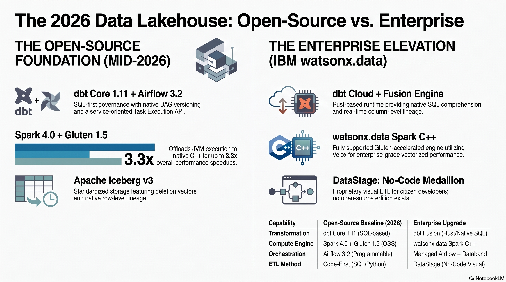

Enterprise overview — watsonx.data Intelligence & Integration
The one big idea
The open-source paths in this workshop — dbt, Spark, Kafka/Flink, OpenMetadata, Metabase — work end to end and are genuinely good enough for many teams. The enterprise add-ons buy you governance, lineage, no-code ETL, observability, and performance you would otherwise hand-build and maintain. You trade engineering effort and operational risk for a licensed, supported stack — metered by Resource Units (RU).
This page is written for enterprise architects and decision-makers. The hands-on labs in the rest of this workshop stay beginner-friendly; here we compare what you already have against what IBM sells on top of it, and we try to be honest about when the upgrade is — and isn't — worth it.
{kind=link}

Everything here is on-premises
This entire tab assumes a self-managed deployment on IBM Software Hub (formerly Cloud Pak for Data). On-prem watsonx.data releases track the Software Hub version line — 5.3 ≈ December 2025, and 5.4 exists. There is a SaaS watsonx.data as well, but the editions, bundling, and RU mechanics described here are the on-prem story.
The customer scenario
This tab follows one concrete customer, because abstract feature lists don't survive a real architecture review.
What they already run (the baseline). A watsonx.data lakehouse with the Spark analytics engine (Java plus Apache Gluten / Velox C++ vectorized acceleration), querying Iceberg tables on MinIO through the Presto SQL engine. Pipelines are built with open-source dbt and/or Kafka. Governance is OpenMetadata / OpenLineage, and BI is Metabase. This is, more or less, the stack you build by following the open-source pages of this workshop.
What this tab proposes (the upsell).
- IBM Knowledge Catalog (IKC) — now delivered as part of watsonx.data Intelligence — for catalog, Manta automated lineage, data quality, business glossary, and the Data Product Hub.
- Confluent Platform on-prem as a unified Kafka ingestion hub fronting many source systems.
- watsonx.data Integration — IBM DataStage, StreamSets, Unstructured Data Ingestion (UDI), and Databand data observability.
The customer's own goal. Use DataStage to build the medallion (silver → gold) after raw data lands; use IKC mainly for data quality and a business glossary; and stand up everything on watsonx.data Premium, on the assumption that Premium bundles watsonx.data Intelligence, unstructured data, observability, and watsonx BI — so a GPU is available and IKC can push access and masking policies down into the lakehouse.
Verify edition entitlements with IBM
Exact bundling changes between releases. Do not quote what watsonx.data Premium includes (watsonx BI, Data Observability, unstructured data, GPU entitlement) or how RU pooling works from this page. Confirm against the IBM Software Hub 5.4 license bulletin (https://www.ibm.com/support/pages/node/7275162) and the Premium overview (https://www.ibm.com/docs/en/software-hub/5.3.x?topic=services-watsonxdata-premium). Treat the architecture below as a design target, not a contract.
Baseline architecture (open source today)
flowchart LR
subgraph SRC[Sources]
CSV[CSV seeds]
APP[App / DB change events]
end
CSV -->|dbt seed / load| LH
APP -->|Kafka + Flink| LH
subgraph LAKE[watsonx.data lakehouse]
LH[(Iceberg on MinIO)]
PRESTO[Presto SQL engine]
SPARK[Spark engine - Gluten / Velox]
LH --- PRESTO
LH --- SPARK
end
PRESTO --> BI[Metabase BI]
subgraph GOV[Open-source governance]
OM[OpenMetadata]
OL[OpenLineage]
end
LH -. dbt artifacts .-> OM
SPARK -. run events .-> OL --> OMThis is the picture after the open-source workshop. dbt and Kafka/Flink feed Iceberg; Presto and Spark read it; Metabase visualizes it; OpenMetadata catalogs it from dbt artifacts and OpenLineage events. It is coherent and inexpensive. Its weak spots are automated column-level lineage across non-dbt tools, enforced data-quality SLAs, masking/policy push-down, and any non-SQL ETL audience — exactly the gaps the next diagram fills.
Upsell architecture (enterprise add-ons)
flowchart LR
subgraph SRC[Many sources]
DB[(Operational DBs)]
SAAS[SaaS / APIs]
FILES[Files / object stores]
DOCS[Unstructured docs]
end
DB & SAAS -->|CDC / connectors| CONF[Confluent Platform on-prem - Kafka hub]
FILES -->|batch extract| DS
DOCS -->|UDI| LH
CONF -->|streaming sink| LH
subgraph INT[watsonx.data Integration]
DS[DataStage - builds silver -> gold]
SS[StreamSets]
DB_OBS[Databand observability]
end
DS --> LH
SS --> LH
LH -. metrics / SLAs .-> DB_OBS
subgraph LAKE[watsonx.data Premium lakehouse]
LH[(Iceberg on MinIO)]
PRESTO[Presto - optional GPU preview]
LH --- PRESTO
end
subgraph IKC[watsonx.data Intelligence - IKC]
CAT[Catalog + business glossary]
MANTA[Manta automated lineage]
DQ[Data quality rules]
POL[Access + masking policies]
DPH[Data Product Hub]
end
LH <-->|policy push-down| POL
LH -. scanned .-> MANTA
LH -. profiled .-> DQ
CAT --- MANTA --- DQ --- POL --- DPH
PRESTO --> COG[Cognos / watsonx BI]
MANTA -. lineage .-> COG
DPH --> CONSUMERS[Governed data consumers]The shape is the same lakehouse core, now wrapped in governance and fed by a broader integration fabric. Confluent unifies streaming ingest from many systems; DataStage builds the medallion transforms after landing; Databand watches pipeline health; IKC/Manta provide catalog, glossary, automated lineage, quality, and policy push-down into the lakehouse; Cognos / watsonx BI consume governed, lineage-backed data; and the Data Product Hub publishes curated products on top.
What each upgrade buys you
The point of this table is to be usable in a real customer conversation, so the "open-source today" column is not a strawman.
| Capability | Open-source today | Enterprise upgrade | Why it matters |
|---|---|---|---|
| Catalog & glossary | OpenMetadata catalog; glossary supported but manually curated | IKC catalog with curated business glossary, term workflows, AI term assignment | Shared business vocabulary with approval workflows; less drift between "what the column is called" and "what the business means" |
| Lineage | OpenLineage + dbt manifest; strong for dbt/Spark, gaps for hand-written SQL and third-party tools | Manta automated, column-level lineage across DataStage, SQL, BI, and more | End-to-end, audit-grade lineage you didn't hand-instrument — the usual deciding factor for regulated customers |
| Data quality | dbt tests + custom checks; you build the framework | IKC DQ rules, profiling, scoring, and dimensions managed centrally | Quality as a governed, monitored SLA rather than scattered assertions in code |
| No-code ETL / medallion build | dbt (SQL) or Spark (code) — developer-centric | DataStage visual flows build silver → gold; StreamSets for streaming pipelines | Lets non-SQL data engineers own transforms; matches the customer's stated goal of building the medalline in DataStage after landing |
| Streaming ingest | Kafka + Flink (self-managed); you operate it | Confluent Platform on-prem: connectors, schema registry, RBAC, support | One supported hub for many sources; less Kafka operations toil |
| Unstructured data | Not covered by the baseline | UDI ingests documents into the lakehouse for search/RAG | Brings PDFs/docs into governed lakehouse assets — a genuine net-new capability |
| Observability | Logs + OpenLineage run status; you assemble dashboards | Databand pipeline observability, anomaly detection, alerting | Detects late/failed/anomalous loads proactively instead of via downstream complaints |
| Policy / masking enforcement | Presto-level grants; OpenMetadata describes policy but does not enforce it in-engine | IKC data protection rules push down into the lakehouse (access + masking) | Define once, enforce everywhere — the capability open source genuinely cannot match |
| Performance | Presto + Spark with Gluten/Velox vectorization (already fast, open source) | Premium options incl. GPU-accelerated Presto (preview) | Incremental for most workloads today; see the honest caveat below |
Be honest about performance
The baseline is already accelerated: Spark with Gluten/Velox is C++ vectorized execution, not vanilla JVM Spark. GPU-accelerated Presto is a PREVIEW, not GA — do not position it as a production differentiator. See Performance & editions for the full caveat and the RU math.
When open source is enough vs when to upgrade
Resist the urge to upsell by default. For a real customer, recommending the right-sized stack earns more trust than recommending the biggest one.
Open source is genuinely enough when:
- The team is SQL-first and comfortable owning dbt/Spark code.
- Governance needs are modest — a catalog and basic lineage, not audited column-level proof.
- Sources are few and stable, so a hand-run Kafka/Flink stack is manageable.
- Data is not heavily regulated and there is no masking/access-policy mandate.
- The team is small and values low licensing cost over reduced operational toil.
The enterprise upgrade pays off when:
- Data is regulated (PII, financial, health) and you must enforce masking and access in the engine, not just document it.
- There is an audit or lineage mandate that requires automated, column-level lineage across many tools (Manta).
- You ingest from many heterogeneous sources and want one supported streaming hub (Confluent).
- ETL is owned by non-SQL data engineers who need no-code/visual pipelines (DataStage, StreamSets).
- You need proactive observability and SLAs on pipelines (Databand) rather than reactive firefighting.
- You want to publish governed, discoverable data products to a broad internal audience (Data Product Hub).
Mixed estates are normal
These are not mutually exclusive. A common, defensible pattern is open-source dbt for the SQL-savvy analytics team, DataStage for the integration team, all landing in the same Iceberg lakehouse, all governed by one IKC catalog. The lakehouse is the shared substrate; the tools above it can differ by team.
RU economics in one paragraph
The enterprise services are metered in Resource Units (RU) drawn from a pooled entitlement, not per-named-feature. The practical question is rarely "which feature" but "how many RU will my workload burn, and is the pool shared across services" — which is exactly where edition bundling matters. The numbers, the pooling rules, and the GPU-preview caveat live in Performance & editions.
How to read this tab
This overview is the map; the sibling pages are the territory.
- Intelligence (IKC) — catalog, business glossary, data quality, Manta lineage, policy push-down, and the Data Product Hub.
- Integration — DataStage building the medallion, StreamSets, UDI for unstructured data, and Databand observability.
- End-to-end lineage — how lineage flows from sources through DataStage and the lakehouse out to Cognos / watsonx BI.
- Performance & editions — Gluten/Velox vs GPU-Presto preview, editions (incl. Premium), and the RU economics.
- Summary & decision guide — the one-page recommendation and a build-vs-buy checklist.
Where this connects to the open-source workshop
Start from Choosing your path for the three open-source ETL paths. The enterprise add-ons map onto familiar workshop pieces: IKC is the supported successor to OpenMetadata; Confluent extends the Kafka → Flink demo; DataStage is previewed in the DataStage demo; and orchestration parallels the Airflow DAGs.